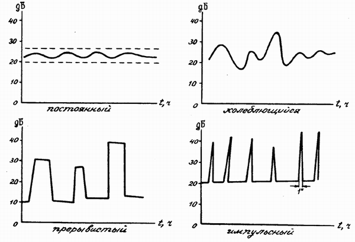
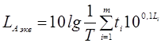

7.1 Классификация шумов
В связи с многообразием источников шума встает вопрос об их классификации. Рассмотрим основные принципы, по которым можно классифицировать шумы:
1. Уровень шума
Уровень звука в децибелах определяется по формуле:
где I – сила
звука, p – звуковое
давление, I0 и p0 –
порог слышимости на частоте 1000 Гц (I0 =
10-12Вт/м2, p0 =
2·10-5Па).
Чувствительность слуха, как известно, зависит от частоты
звука. Для того, чтобы приблизить результаты объективных измерений к
субъективному восприятию, вводят понятие корректированного уровня шума.
Коррекция заключается в том, что используются зависящие от частоты поправки к
уровню соответствующей величины. Эти поправки стандартизованы в международном
масштабе. Наиболее широко используется коррекция А. В соответствии с ней
корректированный уровень шума (в дБ(А)) равен:
где ΔLA – зависящие
от частоты поправки, приведенные в таблице:
|
Частота,
Гц |
63 |
125 |
250 |
500 |
1000 |
2000 |
4000 |
8000 |
|
ΔLA,
дБ |
26,3 |
16,1 |
8,6 |
3,2 |
0 |
-1,2 |
-1 |
1,1 |
2. Спектральный состав
Все физические величины, характеризующие звуковой
сигнал, являются функцией времени, поэтому их можно представить в виде суммы
гармонических колебаний с различными частотами и амплитудами. Зависимость
амплитуды гармонических составляющих звуковой волны от частоты называется
спектром звука (см. раздел 3.3).
Обычно для шумов характерен сплошной или смешанный
широкополосный спектр. При этом в зависимости от положения максимума
интенсивности шумы подразделяют на низкочастотные
(ниже 300 Гц), среднечастотные (от
300 до 800 Гц)
и высокочастотные (выше 800 Гц).
Наряду
с широкополосными шумами
встречаются и тональные шумы,
спектр которых близок к дискретному.
3. Временны́е характеристики шума
По временны́м
характеристикам шумы делят на постоянные и непостоянные (см. рисунок).
Все остальные шумы
- непостоянные:
- колеблющиеся во
времени (уровень звука непрерывно изменяется с
течением времени);
- прерывистые (уровень
звука изменяется ступенчато на 5 дБ(А) и более, причем длительность интервалов,
в течение которых уровень звука остается постоянным, составляет одну секунду и
более);
- импульсные, состоящие из одного или нескольких сигналов, каждый длительностью менее одной секунды.

Для оценки уровня непостоянных шумов используется так
называемый эквивалентный уровень звука. Эквивалентный
уровень звука данного непостоянного шума численно
равен уровню звука постоянного, широкополосного, неимпульсного шума, оказывающего такое же
воздействие на человека, как и постоянный шум. При измерениях с помощью шумомера
эквивалентный уровень шума определяют по формуле:
.
4. Механизм возникновения
По механизму
возникновения различают:
- механический
шум;
- аэрогидродинамический
шум;
- шум электромагнитного
происхождения.
Принцип действия источников и особенности механического
и аэрогидродинамического шума описаны в главе 4 (разделы 4.1.4 и 4.2.4). Что
касается шума электромагнитного происхождения, то это механический шум,
возникающий вследствие колебаний элементов электромеханических устройств под
влиянием переменных магнитных сил (колебания статора и ротора электрических
машин, сердечника трансформатора и др.).
5. Способ распространения
Речь идет о распространении шума в
зданиях.
Если источник шума не связан с конструкциями здания и
звук излучается непосредственно в воздушную среду (разговор, музыка, радио,
телевизор), то звуковая волна вызывает в стене или перекрытии колебания, за счет
чего звук проходит в соседнее помещение. Такой шум
называется воздушным.
Другой вид шума – корпусный
(структурный) шум. Среда его передачи – твердые и
жидкие материалы. Типичные источники такого шума – захлопывание двери, щелканье
выключателя, смыв воды в туалете, шум потока в водопроводных трубах и в системе
центрального отопления. Особенно интенсивным является корпусный шум, излучаемый
каким-либо вибрирующим механизмом (насосом, лифтовым двигателем, вентиляционной
установкой), жестко связанным с конструкцией здания. Механизм передачи
корпусного шума можно описать следующим образом. Стены или перекрытия за счет
механического воздействия приводятся в колебательное движение, которое в свою
очередь заставляют колебаться частицы воздуха в соседнем
помещении.
При ходьбе по междуэтажным перекрытиям (по полу)
возникает ударный шум.
Источники корпусного и ударного шума вызывают интенсивные колебания жестких конструкций здания, по которым упругие волны могут распространяться почти без затухания на большие расстояния и создавать нежелательно высокие уровни шума даже в удаленных от источника помещениях.
Пути
распространения шума в зданиях
1 – воздушный шум; 2 – ударный шум
(прямые пути передачи шума);
3 и 4 –косвенные пути; 4’ – структурный шум, излучаемый конструкциями, связанными с механизмами и элементами инженерного оборудования